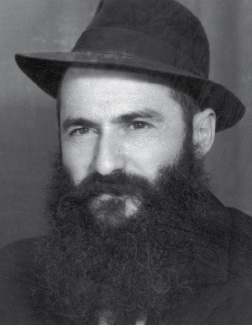

בכה בכו להולך
בכה בכו להולך
נטפי דמע – מנחם זיגלבוים
דוֹדי, ר’ זושא, היה חסיד מיוחד ויחיד. מכל היבט שהוא.

חסיד מיוחד, מהנדירים שבחבורה היה ר’ זושא. ‘איש חסיד היה’, זו מליצה שכבר מזמן יצאה מדפי הזמירות למלווה מלכה ומודבקת על חסידים רבים, אך ר’ זושא היה חסיד במלוא מובן המילה. לא היה לו בעולמו דבר מלבד הרבי. איתו הוא חי, אותו הוא נשם וממנו שאב את כל חיותו. ר’ זושא בדמותו הסבאית-קמאית ‘נגע’ בכל מי שעבר לידו, מילה פה, ווארט שם, כאשר תמיד זה סובב סביב משיח והתגלותו. “נו”, היה מכחכח בגרונו כמו תמיד, “הוא הגיע כבר?” ומיד היה מקרב את אוזנו להטיב את שמיעתו, כמצפה אולי בכל זאת…
ופעם, כשהתעורר לראשונה לאחר אחד הניתוחים הסבוכים שעבר, בדיוק עמד ליד מיטתו הרופא המנתח. ר’ זושא ביקש לומר משהו והרופא רכן לעברו. “נו, הוא הגיע?” הרופא קיבל מיד ‘תרגום’ סימולטני לשאלה מפי רעייתו של ר’ זושא, הגב’ נעמי, שותפתו לאמונה.
לא תמים היה הדוֹד שלי וגם לא ‘מנותק’. הוא ידע היטב מה קורה בעולם. עדיין לא ממש ברור לי אם אכן ציפה לשמוע ‘אולי בכל זאת’, או שבעצם שאלותיו אלו ביקש להחדיר את הציפייה העזה שפיעמה בלבו בלהט גם לאלו שסביבו.
הרבה שעות זכיתי לשבת במחיצתו. למרות רום שנותיו, תמיד ביקש לספר ולשתף את קורות חייו; רק תנו לו הזדמנות לספר על קירוב שזכה לקבל מהרבי, והניצוץ שבעיניו היה הופך ללבת אש. זה פשוט היה מחיה אותו. וכשאני חושב על האיש הצנום הזה, שראה לא מעט סבל בחייו, ממשיך וצוחק את הצחוק הקצר האופייני לו, משפיע ללא הרף גלים של תקווה, אופטימיות ואמונה; האיש הזה שתמיד, אבל תמיד, היה בצד הנותן ולא המקבל, ומעולם-מעולם לא נח על זירי הדפנה.
הוֹ, כמה זוכר אני שהיה ‘שופך’ את לבו על כך שהרופא, והרעייה, והחברים מאיצים בו להאט את הקצב, כמעט מכריחים. והוא… הוא לא יכול… פשוט לא מסוגל. “תגיד לי”, שוב היה מכחכח בגרונו, “אחרי מה שהרבי אמר לי להמשיך במסעדה, אני יכול לעזוב?!” ולא שהוא חיכה לתשובה… והמסעדה הזאת, למי ששואל, כבר שנים ארוכות מאוד לא הייתה ריווחית. פעם שיתף אותי בגודל ההפסדים החודשיים שלה. אינני זוכר את המספר המדויק, אבל אני זוכר שנדהמתי. בכל זאת, לב תל אביב…
האמת? אינני בטוח שר’ זושא עלה למעלה. ייתכן וזה אחד הטריקים השובבים שהיה עושה במשפחה בעתות שמחה וכדומה. אבל אם… אם כן, אין לי ספק שהמוני-המוני חבילות של מצוות ומעשים טובים שעשה בחייו, רבוא רבבות של מילים טובות שהשפיע, אינספור מטבעות צדקה שזיכה בהם יהודים, פסיעות שהלך בהם למען הזולת, מעשי חסד בלי ספור, ייצאו לקראתו להקבילו כיאות. והוא, במקום לתת להם לסחוב אותו למקומו השמור לו, יסחב אותם אל כסא הכבוד, ויגיד בפשטות “את כל זה אני נתתי כדי לזרז את ההתגלות של הרבי מלך המשיח. זה לא מספיק? צריך עוד?!” וכשהקב”ה ישיב לו מה שישיב, הוא יתקרב עוד קצת, יקפל כמנהגו את אוזנו וישאל “וואס??” כי באמת, אף פעם הוא לא שמע תירוצים שלא קידמו את המטרה שלו: ההתגלות!